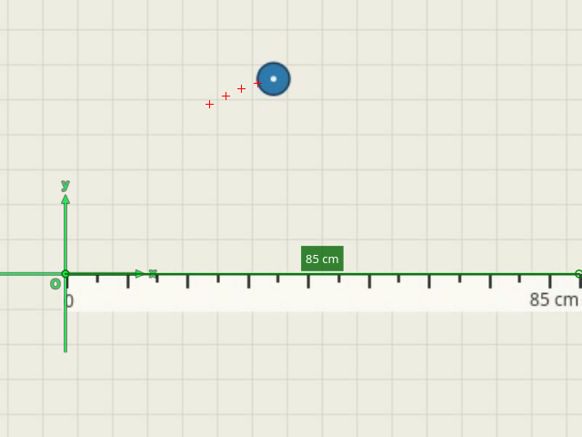

Filming a motion
Filming well with a phone, transferring the video, slow motion
Frame the experiment
- Keep the camera still. Frame the entire motion with the optical axis perpendicular to its plane.
- Place a ruler or two marks a known distance apart in the same plane. Both endpoints should be visible together in at least one frame.
- Choose a high-contrast feature on the moving object. Light the scene and inspect a few trial frames to check that the feature stays sharp and moves far enough between frames to mark.
- For fast motion, increase the capture rate if there is enough light. Record the chosen rate so you can check the times during analysis.


Transfer the original recording
Transfer the original recording by cable or through the school’s file service. Before handing it out, open it from a student account, go to the last frame of interest and note a known distance in the plane of motion.
If you crop or re-encode the recording, give the copy a different filename. Prepare any student project with the exact file that students will receive. A messaging app may discard slow-motion metadata when recompressing a recording.
Phone videos
- In portrait
- MeVCine straightens a video filmed in portrait by itself. If it still appears lying on its side, rotate it: step 1 of simple mode, or the ⟲ ⟳ buttons under the frame in expert mode (before the scale and marking).
- Slow motion
- A video recorded at 240 frames/s may play at 30 frames/s. Times for the experiment depend on the capture rate. MeVCine uses the capture rate when the file supplies it. Otherwise enter the known rate under Slow-motion video? at step 4 or Frames per second in expert mode. Check the interval between two consecutive rows afterwards.
- Variable frame rate
- Many phones do not film at a perfectly regular rate: for instance 40 ms, then 44 ms between two frames; or they drop frames, or film more slowly when the light gets dim. MeVCine detects it (“Variable frame rate”) and uses the real time of each frame: the intervals in the table are then not all equal, and that is normal. The velocities and accelerations of the grapher take it into account; do the same in your calculations, with the times of the table.
- HDR
- HDR videos (recent iPhones) are converted to ordinary colours: they do not look washed out.
For footage captured at 240 frames/s and played at 30 frames/s, consecutive frames of the motion are about 4.17 ms apart. A table interval of 33.3 ms indicates that the playback rate was used. Check the capture rate in the file or in your recording notes.
Formats
MeVCine reads the formats of phones, cameras and webcams: MP4, MOV, AVI, MKV, WebM, 3GP, MTS…, in H.264, HEVC (H.265), AV1, VP9, ProRes, Motion JPEG. Very large videos (4K) open, but more slowly: for a lab, a 1080p video is plenty. A video that MeVCine cannot examine within two minutes (damaged file, USB stick too slow) is declared unreadable: copy it to the computer first.